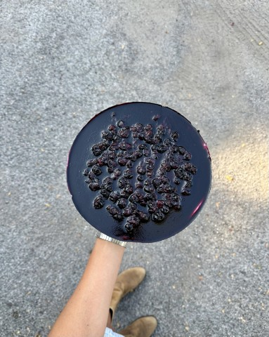

Cheesecake de Vane
Vane’s cheesecake is the only no-bake cheesecake I recommend. It’s easy
and super versatile: you can choose any flavor for the top layer!

Ingredients
- 160 grams of crackers
- 85 grams of unsalted butter
-
452 grams of cream cheese (2-8oz cream cheese blocks in the U.S. or
CasanCrem in Argentina)
- 150 grams of sugar
- 2 tablespoons of lemon zest
- 2 teaspoons of vanilla extract
- 1 envelope of unflavored gelatin (7.2 grams)
- 150 grams of heavy cream
Top Layer
- A handful of your choice of berries
- Some lemon or orange juice
- 1 envelope of unflavored gelatin (7.2 grams)
- 2 tablespoons of sugar (optional)
Procedure
-
Process the crackers and add the melted butter. Incorporate well and
use the mixture to make a crust in a 9” springform pan.
-
Bake in a 350°F oven for 10 minutes. Remove from the oven and let
cool.
-
In a bowl, mix the room-temperature cream cheese, sugar, lemon zest,
and vanilla extract.
-
Hydrate gelatin: Sprinkle it in a small bowl, add some boiling water,
and stir until it is completely dissolved.
-
Add the dissolved gelatin to the mixture in the bigger bowl. Mix until
it is homogeneous, making sure there are no lumps.
-
Separately, mix the heavy cream just enough so it’s a little more
solid and fold it into the main mixture.
-
Pour the mixture on the crust and refrigerate while you make the
topping.
-
For the top layer, cook the berries over medium heat, along with some
lemon or orange juice and sugar if you want extra sweetness, just
enough to make a jam-like sauce. Separately, in a small bowl, repeat
the process of hydrating unflavored gelatin, and then add it to the
sauce.
-
Pour the berry sauce on top of the cheesecake and refrigerate for at
least 3 hours before eating.
Note: my mom doesn’t do the berry layer on the
cheesecake. Instead, she makes the sauce without the gelatin, and pours
it on every slice when serving.